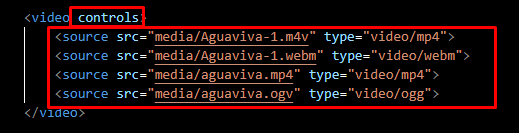

Este vídeo está hospedado no me próprio servidor (meu computador)
a tag utilizada para isto é video e tem o mesmo conceito de criação da tag audio
O tamanho origianl do video pode ficar muito grande na tela. Então, é possivel reduzi-lo com o parâmetro "width" após o arquivo
Neste exemplo de código, inserimos um único tipo de arquivo
Neste outro, inserimos varios arquivos visando a execução em todos os navegadores
Para isso, utilizamos o parâmetro controls à frente de video + a tag source:src
É possivel inserir a capa do vídeo utilizando a tag poster

Ao compartilhar um video do youtube, é possivel "incorporar" o link. Lá tem essa opção. Basta copiar este link incorporado e colar aqui. O código ja estará monatdo
O consumo de banda neste vídeo será no servidor do Youtube
O youtube não possui limitações de configurações para o video que for disponibilizado
Abaixo, temos um exmeplo de vídeo do Vímeo. Netse canal, é possivel limitar que pode ter acesso a determinadas ações e configurações. Desde que o usuário ou o dono do site possua uma conta no Vimeo